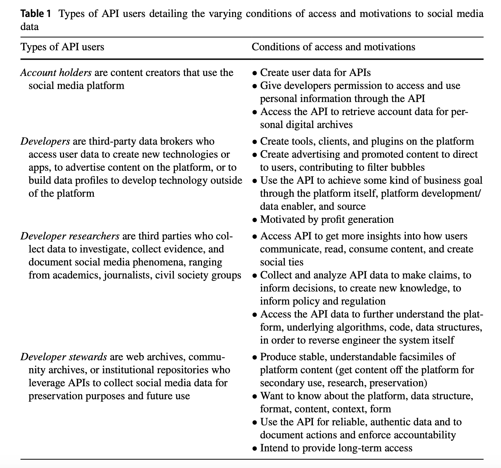
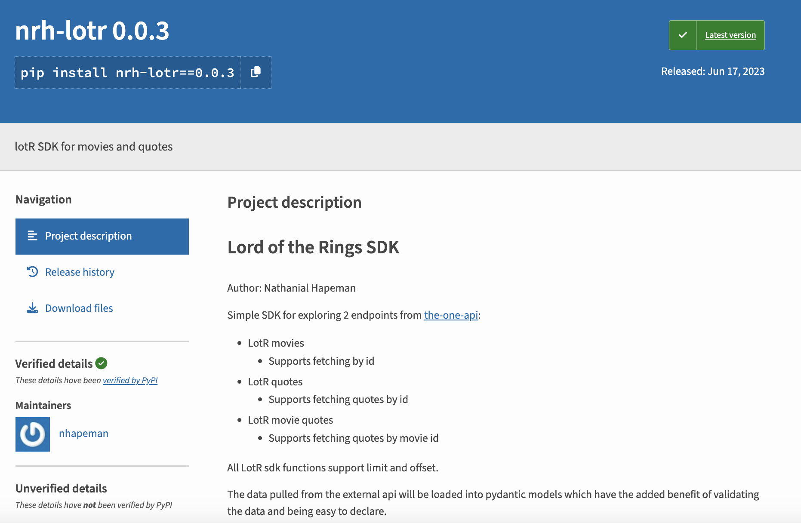
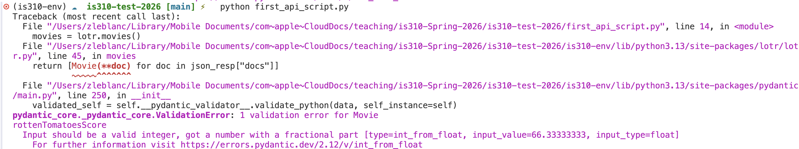
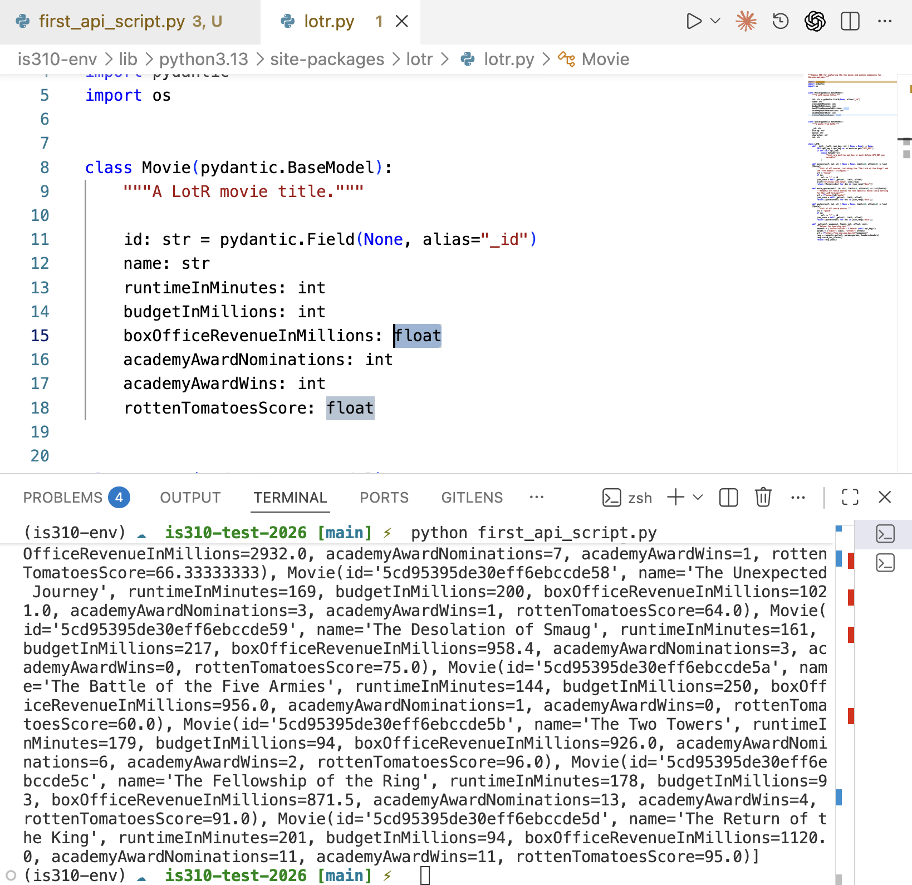
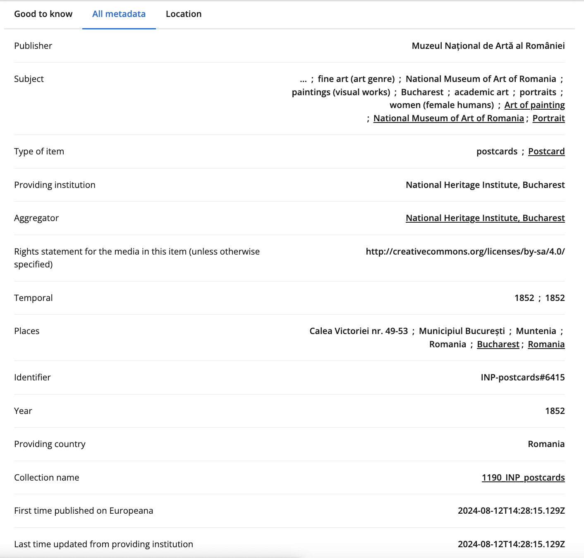
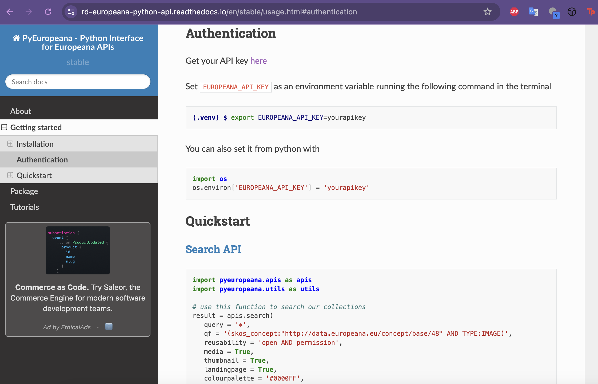

Getting Cultural Data From APIs
So far in class we have briefly mentioned APIs (for example, the Spotify API), but haven’t yet discussed what they are or how to use them. This week we will start to work through the basics of using APIs to get data from the web.
What is an API?
API stands for Application Programming Interface, but what does that mean exactly?
While according to Wikipedia,
An application programming interface is a connection between computers or between computer programs. It is a type of software interface, offering a service to other pieces of software. A document or standard that describes how to build or use such a connection or interface is called an API specification.
But while that is technically correct, it probably leaves you with more questions than answers.

In this figure, you’ll notice that we have a web browser that is using the “internet cloud” to make requests and get responses from an API that is connected to a web server and a database. This might seem complex, but we’ve seen a similar relationship when we talked about how the web works. We learned previously about how web browsers use HTTP to make requests and get responses from web servers, this is essentially the same concept. APIs are just a way to get data from a server, similar to how we get web pages from a server, but instead of storing the data in a webpage (aka an HTML document), the data is stored in a database. For example, when you use a weather app, or really any app on your phone, that app is using an API to get the weather data from a server.
Databases might also sound intimidating, but they are just a way to store data, similar to .csv or .json files. The difference is that databases are designed to store large amounts of data and to allow that data to be accessed and manipulated quickly, usually using something called SQL (Structured Query Language), which is a programming language that allows you to interact with databases.
Rather than going to a URL in your browser, an API lets us send a similar request to a server. To help us understand APIs, let’s explore a bit of their origins and development.
While HTTP and HTML were became popular in the late 1980s and 1990s, APIs only became popular in the early 2000s. Kin Lane, the API Evangelist, has a blog post titled “The History of APIs” https://web.archive.org/web/20190722130022/https://history.apievangelist.com/, which explores this history.1
According to Lane, one of the first APIs was developed by Salesforce in 2000, which allowed developers to access data from their databases and to build applications for customer relationship management. This initial API provided access to XML data, which is a type of markup language similar to HTML (remember TEI?). This was followed by eBay, which also developed an API in 2000.

While a lot of the infrastructure and standards for APIs were developed during the same period as the earlier web history, what really made APIs start to take off in the mid-2000s was the emergence of Web 2.0.

Web 2.0 was a term coined by Tim O’Reilly in 2004 to describe a new era of the web that was more interactive and user-driven. This era saw the rise of social media platforms like Facebook, YouTube, and Twitter, which allowed users to create and share content online. These platforms started to have massive databases of user-generated content, and so to access this data, they needed to develop APIs.

The figure above comes from the chapter “A Brief History of APIs” by Jakob Jünger. Jünger argues that while the early 2000s were important for popularizing the idea of “mashups” (combining data from multiple sources), the mid-2000s saw the rise of social media APIs. Facebook, YouTube, and Twitter all introduced APIs that allowed developers to build applications that integrated social media data. For example, YouTube’s API allowed developers to upload videos and access analytics data, while Facebook’s API allowed developers to build applications that integrated with the Facebook platform, specifically their Social Graph API, which allowed developers to access data about users and their connections.2

The growth in these platforms then led to the rise of third-party applications that used these APIs. For example, you might have heard of TweetDeck, which is/was an incredibly popular Twitter client that allowed users to manage multiple Twitter accounts and to schedule tweets and was bought by Twitter in 2011. Similarly, Google introduced the OpenSocial initiative in 2007 to try and standardize API interactions, but it largely failed, with most platforms retaining unique APIs. Facebook and Twitter in particular prioritized control over data access and usage through increasingly strict terms of service.
While TweetD TweetDeck was built using the Twitter API, which allowed developers to access data about tweets, users, and trends. This era of APIs was characterized by a proliferation of third-party applications and platforms, as well as a push for standardization. Google and others attempted to standardize API interactions with initiatives like OpenSocial, but most platforms retained unique APIs, with Facebook and Twitter prioritizing control over data access and usage through increasingly strict terms of service. Part of this focus on control was due to the rise of data privacy concerns, especially after events like the revelations of the Facebook–Cambridge Analytica data scandal in 2018. For those unfamiliar, this scandal was when it was revealed through a New York Times and The Guardian investigation that the political consulting firm Cambridge Analytica had harvested data from millions of Facebook users without their consent and used it to target political ads during the 2016 US presidential election. In the aftermath of this scandal, many of these platforms have restricted access to their APIs, leading computational social scientist, Deen Freenlon, to term this as the “post-API age.”3
Understanding this history is helpful because it gives us a sense of the many users of APIs, as summarized in the table below:

This table comes from Amelia Acker and Adam Kreisberg’s article “Social Media Data Archives in an API-Driven World” which explores how APIs are limiting access to social media data and the implications of this for archiving and research; a topic we’ve discussed in class.4 You’ll notice in this table they identify a number of different users of APIs, including individual account holders on a platform (so if you’ve ever tried to export your social media data for example), developers who build applications that use APIs, develop researchers which are researchers who use APIs to access data for their research and especially for those who study these platforms, and lastly, developer stewards who are often archivists and preservation specialists who use APIs to collect and preserve data. While these groupings are not definitive or exhaustive, they give us a sense of the many different users of APIs and the many different ways APIs are used. However, it is critical to understand that very few APIs are designed to be used by this many different groups of users, and that instead the majority of APIs are designed to be used by a single group of users, often developers building applications since that is the most profitable use of APIs.
Working with APIs
Now that we have a sense of what an API is and how they have developed, let’s start to work with them. We are going to be building from our web scraping lesson, using the requests library and once again working with Lord of the Rings data, but this time we are going to use The One API https://the-one-api.dev/. For those unfamiliar, the one in the name is a reference to the Lord of the Rings series, where the One Ring is the most powerful of the Rings of Power and is the central plot device of the series.
According to the documentation, “The One API to rule them all is a non-commercial, open-source project” and provides access to data from the Lord of the Rings books and movies, including characters, quotes, and books.
If we go to the about page https://the-one-api.dev/about, we can learn that the project was created in 2019 by Ulrike Exner and Mateusz Kikmunter, who are both developers. We can also visit the GitHub repository for the project https://github.com/gitfrosh/lotr-api/graphs/contributors to see the history of the project.

So let’s try this out!
Making an API Request
In your is310-coding-assingments, create a new folder called api-getting-data and then create a new script called first_api_script.py. In this script, import the requests library and then create a variable called url that is the base url for the LOTR API.
import requests
url = 'https://the-one-api.dev/v2/book'If you get an error, running this code telling you that requests is not installed. Please remember to activate your Python virtual environment!
Now how could we use this URL to get data from the API? We could use the requests.get method we used in the web scraping lesson. Let’s try that out.
response = requests.get(url)How could we see that this request worked? We can print the status code of the response.
print(response.status_code)Hopefully we are all seeing 200 responses, but if you are seeing a 404 or 403 response, you might need to authenticate with the API. We will discuss this more in the next section, but for now, let’s try to print out the response.
In our web scraping lesson, we used the .text method to print out the response, but for APIs, we often use the .json() method. Let’s try that out.
print(response.json())You should see something like the following:
{
'docs':
[
{
'_id': '5cf5805fb53e011a64671582',
'name': 'The Fellowship Of The Ring'
},
{
'_id': '5cf58077b53e011a64671583',
'name': 'The Two Towers'
},
{
'_id': '5cf58080b53e011a64671584',
'name': 'The Return Of The King'
}
],
'total': 3,
'limit': 1000,
'offset': 0,
'page': 1,
'pages': 1
}This is the data that The One API returned to us. It’s in a format called JSON, which stands for JavaScript Object Notation and was originally designed to allow websites to pass data back and forth between the browser and the server. But it’s become a really popular generic format for all sorts of things and all sorts of languages. You’ll notice that JSON looks very similar to a Python dictionary, and in fact, it’s a way to store data that is similar to a Python dictionary.
Based on this data, we can see that The One API has returned data about the three books in the Lord of the Rings series. Each book has an _id and a name. The books themselves are returned in a list for the key docs, and then there are some other keys that provide information about the data that was returned, including total, limit, offset, page, and pages. Total tells us how many items were returned, limit tells us how many items could be returned per page, offset tells us where in the data we are (similar to indexing), page tells us what page we are on, and pages tells us how many pages of data there are.
While this is a pretty minimal amount of data, it does give us a sense of how APIs work. Just as if we were going to a web browser, we can make requests to an API and get data back. This data will be structured in some way and we can use that structure to understand the data and to work with it. It is important to note that there is no one way that APIs are structured, and each API will have its own structure and its own way of working. This is why it’s important to read the documentation for an API before you start working with it.
Authentication & Endpoints
So far we have just been able to send a request to The One API and get data back, but what if we wanted to get more specific data? For example, what if we wanted to get data about a specific character or quote from the Lord of the Rings series? To do this, we need to use something called an endpoint.

If we go to The One API documentation https://the-one-api.dev/documentation#4, we see the following table that outlines what endpoints exist.
An endpoint might sound like a very technical term, but it is essentially just a specific URL that is used to access a specific piece of data from an API. For example, if we wanted to get data about a specific character, we would use the /character endpoint. If we wanted to get data about a specific quote, we would use the /quote endpoint.
We can even try out that initial book endpoint in the browser which should give us the following:

However, if we try to get characters or quotes in the browser, we will see the following:

Indeed, if we update our python code we can see the exact same thing.
url = 'https://the-one-api.dev/v2/character'
response = requests.get(url)
print(response.status_code)This should return a 401 status code, which means that we are not authorized to access this data. This is because the LOTR API requires us to authenticate before we can access data about characters or quotes. This is a common feature of APIs, as it allows the API to track who is accessing their data and to limit access to certain users.
Authentication can sound intimidating but you actually do it all the time already. For example, when you login to your email, you are authenticating with a server to access your email. When you login to DUO, you are authenticating with a server to access your account. When you login to social media, you are authenticating with a server to access your account. The difference is that when you use a web browser, this is all handled automatically for you, but when you use an API, you have to do this explicitly.

If we return to The One API documentation https://the-one-api.dev/documentation#3, we can see that we need to sign up for an account to use the API at this link https://the-one-api.dev/sign-up.

Once you have signed up and logged in, you should see the above page for your account, which will include your API key. This key is unique to you and is used to identify you when you make requests to the API. It’s like a password, so you should keep it secret and not share it with anyone.
You should copy the key into your first_api_script.py and then try to get data about characters or quotes.
api_key = "API KEY HERE"
url = 'https://the-one-api.dev/v2/character'
authorization_headers = {
'Authorization: Bearer ' + api_key
}You’ll notice that we are using a new variable called authorization_headers that is a dictionary with a key of 'Authorization' and a value of 'Bearer ' + api_key. This is how we pass our key to The One API so that it knows who we are and that we are allowed to use their API.
Now let’s update our requests.get method to include these headers.
response = requests.get(url, headers=authorization_headers)
print(response.status_code)Now we should see a 200 status code, which means that we are authorized to access this data. Before we explore this new data, we need to first understand how to store our API keys securely.
Currently, we just have our api key in a string in a variable, which is easy to use but it’s not the most secure. For example, if you pushed this up to GitHub, then everyone would be able to see and use your API key. You’ll notice that The One API says that you should limit your requests “to 100 requests every 10 minutes”. However, if you shared your key, someone could easily use it and you would be locked out of the API. Even worse, if they did something illegal with your key, you could be held responsible. So rule of thumb is don’t share your API key!
Storing API Keys
There are a number of ways to more securely store your API keys.
One option is just copying our API keys to a text file and save them there (especially because they are rarely something you can memorize), but there’s also more programmatic ways to do this.
Another option is that you could store your API keys as an environment variable. Environment variables are a way to store data that is accessible to all programs running on your computer.
To create an environment variable, you open your terminal and type the following, replacing api_key with your API key.
For Macs/WSL:
export THE_ONE_API_KEY="YOUR_API_KEY_HERE"For Windows/PowerShell:
setx THE_ONE_API_KEY "YOUR_API_KEY_HERE"Now you can access these environment variables in your Python script by using the os library.
import os
the_one_api_key = os.environ['THE_ONE_API_KEY']
print(the_one_api_key)However, these will only be available in the terminal you created them in, so you would have to create them every time you open a new terminal. If you want to make them available in every terminal, you can add them to your .bashrc or .zshrc file on Macs/WSL or your profile.ps1 file on Windows.
This is a bit more work though, and one easier option is to use a Python library for storing API keys, called apikey https://github.com/ulf1/apikey.
In your terminal, type pip install "apikey>=0.2.4 to install the library. Then import it into your script and write:
import apikey
apikey.save("THE_ONE_API_KEY", "YOUR_API_KEY_HERE")
the_one_api_key = apikey.load("THE_ONE_API_KEY")While you can use any of these options, I would recommend using the apikey library, as it’s the most secure and the easiest to use. If you continue with programming, you will likely end up using the .zshrc or .bashrc method, but for now, the apikey library is the best option.
Making API Requests
Now that we have our api key stored securely, let’s try to get data about characters from The One API. We can do this by updating our url variable to include the /character endpoint.
the_one_api_key = apikey.load("THE_ONE_API_KEY")
authorization_headers = {
'Authorization': 'Bearer ' + the_one_api_key
}
url = 'https://the-one-api.dev/v2/character'
response = requests.get(url, headers=authorization_headers)
if response.status_code == 200:
print(response.json())
else:
print(response.status_code)This should show a much larger amount of data, including information about all the characters from the Lord of the Rings series in this database. You’ll notice that the data is structured in a similar way to the data about books, with a list of characters and some other information about the data that was returned.
{'docs': [{'_id': '5cd99d4bde30eff6ebccfbbe',
'name': 'Adanel',
'wikiUrl': 'http://lotr.wikia.com//wiki/Adanel',
'race': 'Human',
'birth': None,
'gender': 'Female',
'death': None,
'hair': None,
'height': None,
'realm': None,
'spouse': 'Belemir'},
{'_id': '5cd99d4bde30eff6ebccfbbf',
'name': 'Adrahil I',
'wikiUrl': 'http://lotr.wikia.com//wiki/Adrahil_I',
'race': 'Human',
'birth': 'Before ,TA 1944',
'gender': 'Male',
'death': 'Late ,Third Age',
'hair': None,
'height': None,
'realm': None,
'spouse': None},
{'_id': '5cd99d4bde30eff6ebccfbc0',
'name': 'Adrahil II',
'wikiUrl': 'http://lotr.wikia.com//wiki/Adrahil_II',
...
'total': 933,
'limit': 1000,
'offset': 0,
'page': 1,
'pages': 1}Since the api response is in json format, we can work with it similar to working with a dictionary. For example, we can see all the keys in the response by using the .keys() method.
response.json().keys()This should show the following:
dict_keys(['docs', 'total', 'limit', 'offset', 'page', 'pages'])We can access the total key to see how many characters are in the database.
response.json()['total']This should return 933, which means that there are 933 characters in the database. We can also loop through the docs key to see each character.
for character in response.json()['docs']:
print(character)This should show a list of dictionaries, each of which contains information about a character from the Lord of the Rings series. You’ll notice that each character has an _id, a name, a wikiUrl, a race, a birth, a gender, a death, a hair, a height, a realm, and a spouse.
So if we only wanted to see the data about a certain character, like Galadriel, we could loop through the characters and print out the data for Galadriel.
for character in response.json()['docs']:
if character['name'] == 'Galadriel':
print(character)Which would return the following data:
{'_id': '5cd99d4bde30eff6ebccfd06', 'name': 'Galadriel', 'wikiUrl': 'http://lotr.wikia.com//wiki/Galadriel', 'race': 'Elf', 'birth': 'YT 1362', 'gender': 'Female', 'death': 'Still alive: Departed over the sea on ,September 29 ,3021', 'hair': 'Golden', 'height': 'Tall', 'realm': 'Eregion,Lothlórien,Caras Galadhon', 'spouse': 'Celeborn'}While we can do this using Python, we could also change our URL to only get data about Galadriel. We can do this by adding a query parameter to our URL.
url = 'https://the-one-api.dev/v2/character?name=Galadriel'
response = requests.get(url, headers=authorization_headers)
print(response.json())Query parameters are a way to pass data to an API to get specific data back. In this case, we are passing the query parameter name=Galadriel to The One API to get data about the character Galadriel. You’ll notice that the URL has a ? at the end of it, followed by the query parameter name=Galadriel. Returning to the API’s documentation https://the-one-api.dev/documentation#5, we can see that we can use query parameters for sorting, filtering, and pagination data from The One API.

As you can see in the figure above, you can also add multiple query parameters by separating them with an &. For example, if we wanted to get all other elves besides Galadriel, we could use the does not match query parameter name!=Galadriel and chain that with the race query parameter race=Elf.
url = 'https://the-one-api.dev/v2/character?name!=Galadriel&race=Elf'
response = requests.get(url, headers=authorization_headers)
print(f"Total number of elves besides Galadriel: {response.json()['total']}")Finally, we can also use the id in each data returned from the API to get more specific data. For example, if we wanted to get data about all the movie quotes of Galadriel, we could first get the id of Galadriel and then use that id to get data about her quotes.
url = 'https://the-one-api.dev/v2/character?name=Galadriel'
response = requests.get(url, headers=authorization_headers)
galadriel_id = response.json()['docs'][0]['_id']
quote_url = f'https://the-one-api.dev/v2/character/{galadriel_id}/quote'
response = requests.get(quote_url, headers=authorization_headers)
print(response.json())Finally, let’s use the time library in Python so that we don’t exceed the 100 requests every 10 minutes limit.
import time
url = 'https://the-one-api.dev/v2/character?name=Galadriel'
response = requests.get(url, headers=authorization_headers)
galadriel_id = response.json()['docs'][0]['_id']
quote_url = f'https://the-one-api.dev/v2/character/{galadriel_id}/quote'
response = requests.get(quote_url, headers=authorization_headers)
print(response.json())
time.sleep(10)Understanding how to use query parameters and how to use the id of data returned from an API is critical to working with APIs, as it allows you to get specific data from an API. This is especially important when working with large datasets, as it allows you to filter and sort data to get the data you need. Remember collecting all the data is not always the best option, and can actually lead to more work depending on your research question.
The Wikimedia API: Finishing What We Started
Let’s return to a problem we left unsolved.
In our web scraping lesson, we tried to scrape the Lord of the Rings Fandom wiki and got a 403 Forbidden. The site was behind Cloudflare’s bot protection, cloudscraper couldn’t get through it, and we concluded that the right response was not to try harder but to look for a sanctioned way in. We then went and scraped Tolkien Gateway instead.
But we noted at the time that there was a third option. Fandom, like every wiki running MediaWiki software, offers an API. And that API is not behind the bot protection at all:
import requests
response = requests.get("https://lotr.fandom.com/api.php", params={
"action": "query",
"list": "categorymembers",
"cmtitle": "Category:Canon_characters_in_The_Rings_of_Power",
"cmtype": "page",
"cmlimit": "max",
"format": "json",
}, timeout=15)
print(response.status_code)This returns 200. The same server that refused to show us /wiki/Main_Page will happily hand us the same information through /api.php.
This is worth dwelling on, because it is the single most useful thing to understand about the relationship between scraping and APIs. The site was not trying to keep us away from the data. It was trying to control how the data gets requested. Scraping is expensive for a server — it means rendering full pages, ads, images, and JavaScript for someone who only wants a list of names. An API request is cheap, predictable, and easy to rate-limit. When a site blocks scrapers but publishes an API, it is telling you: not like that — like this.
The MediaWiki Action API
MediaWiki is the software that runs Wikipedia, and also Wiktionary, Wikisource, Wikidata, every Fandom wiki, and a large share of the independent wikis we looked at last week. They all share the same API, which means learning it once gives you programmatic access to an enormous amount of the world’s collaboratively-written reference material.
Every MediaWiki site exposes its API at a predictable location — /w/api.php on Wikimedia’s own sites, /api.php on most others:
- English Wikipedia: https://en.wikipedia.org/w/api.php
- Wikisource: https://en.wikisource.org/w/api.php
- LOTR Fandom wiki: https://lotr.fandom.com/api.php
If you open any of those in a browser, you’ll get an interactive sandbox where you can build and test queries without writing any Python — which is a very good way to explore before you commit to code. The full reference lives at https://www.mediawiki.org/wiki/API:Main_page.
Unlike The One API, Wikimedia requires no API key. But it does have one firm requirement, and it connects directly to the ethics we discussed last week: you must send a descriptive User-Agent header identifying who you are, per their policy https://foundation.wikimedia.org/wiki/Policy:User-Agent_policy. Requests with a generic or absent User-Agent may be refused.
import requests
API_URL = "https://en.wikipedia.org/w/api.php"
HEADERS = {"User-Agent": "is310-course/1.0 (https://YOUR-USERNAME.github.io; YOUR_NETID@illinois.edu)"}Notice this is the same practice we adopted for scraping Tolkien Gateway — identify yourself honestly and give someone a way to contact you. Here it isn’t just good manners; it’s the documented condition of use.
Structuring an API Query
Nearly everything in the action API goes through action=query, with additional parameters describing what you want. Let’s ask for the members of a category:
params = {
"action": "query",
"list": "categorymembers",
"cmtitle": "Category:The Lord of the Rings: The Rings of Power",
"cmtype": "page",
"cmlimit": "max",
"format": "json",
}
response = requests.get(API_URL, params=params, headers=HEADERS, timeout=15)
data = response.json()
for page in data["query"]["categorymembers"]:
print(page["title"])The Lord of the Rings: The Rings of Power
List of The Lord of the Rings: The Rings of Power characters
List of The Lord of the Rings: The Rings of Power features
Music of The Lord of the Rings: The Rings of Power
...A few things to notice here, because they generalize to most APIs you’ll meet:
- We’re passing parameters as a dictionary to
params=rather than gluing them onto the URL with?and&by hand.requestsbuilds the URL for us and — importantly — handles escaping. That category title contains spaces and a colon, which are not legal in URLs. Letrequestsdeal with it. - The prefixed parameters (
cmtitle,cmtype,cmlimit) belong to thecategorymembersmodule. MediaWiki uses short prefixes to keep modules from colliding, so when you read documentation forlist=langlinksyou’ll seell-prefixed parameters instead. format=jsonis required. Without it you get HTML meant for a human.
Answering Our Original Question
Back in the scraping lesson, the question we originally wanted to answer was: how many languages has each character’s page been translated into? We measured reference counts instead, because Tolkien Gateway is English-only. On Wikipedia we can ask the real question, using prop=langlinks:
def get_language_count(title):
response = requests.get(API_URL, params={
"action": "query",
"titles": title,
"prop": "langlinks",
"lllimit": "max",
"redirects": 1,
"format": "json",
}, headers=HEADERS, timeout=15)
pages = response.json()["query"]["pages"]
page = next(iter(pages.values()))
if "missing" in page:
return None
return len(page.get("langlinks", []))
for character in ["Sauron", "Galadriel", "Elrond", "Gil-galad", "Celebrimbor"]:
print(f"{character:14} {get_language_count(character)}")Sauron 57
Galadriel 45
Elrond 42
Gil-galad 28
Celebrimbor 20That next(iter(pages.values())) is a little awkward, and it’s worth explaining. The API returns pages keyed by their internal page ID — {"query": {"pages": {"23140073": {...}}}} — and we don’t know the ID in advance. So we take the first (and here, only) value from the dictionary rather than trying to look it up by key.
Now try the same function on the characters invented for the show:
for character in ["Arondir", "Halbrand", "Disa"]:
print(f"{character:14} {get_language_count(character)}")Arondir 2
Halbrand 2
Disa 5Every one of these numbers is wrong, and not one of them raised an error. Let’s find out why, because the two failure modes here are ones you will meet constantly.
First, Arondir and Halbrand. Ask the API to report what it did with the titles you gave it:
response = requests.get(API_URL, params={
"action": "query", "titles": "Arondir|Halbrand|Galadriel",
"prop": "langlinks", "lllimit": "max", "redirects": 1, "format": "json",
}, headers=HEADERS, timeout=15)
print(response.json()["query"]["redirects"])[{'from': 'Halbrand', 'to': 'List of The Lord of the Rings: The Rings of Power characters', 'tofragment': 'Halbrand'},
{'from': 'Arondir', 'to': 'List of The Lord of the Rings: The Rings of Power characters', 'tofragment': 'Arondir'}]The invented characters do not have Wikipedia articles at all. They are redirects into a section of a single shared “List of characters” page. Our function faithfully reported the language count of that list page — the 2 was real, it just wasn’t about Arondir.
Disa fails differently, and worse. It isn’t a redirect; there is a genuine English Wikipedia article at that exact title, and it’s about a genus of orchids. Our function looked up a real page, found five language links, and returned a perfectly plausible number about a flower.
These are the two ways a title-based lookup goes wrong:
- The right subject at the wrong granularity — a redirect sends you to a broader page that contains your topic as a section.
- The wrong subject entirely — a name is ambiguous, and you silently get somebody else’s article.
Neither produced an exception. Both produced small integers that would have slotted straight into a spreadsheet next to Galadriel’s 45 and looked entirely reasonable. If you had run this over fifty characters and gone straight to a bar chart, you would never have known.
The defense is to make the API tell you what it actually resolved. Ask for the resolved titles alongside your data and compare them to what you requested:
response = requests.get(API_URL, params={
"action": "query", "titles": "Arondir|Disa|Galadriel",
"prop": "langlinks", "lllimit": "max", "redirects": 1, "format": "json",
}, headers=HEADERS, timeout=15)
data = response.json()["query"]
for page in data["pages"].values():
print(page["title"], len(page.get("langlinks", [])))If the title that comes back isn’t the title you asked for, you have a problem — and now you can see it.
Setting the errors aside, the underlying finding matches what we reached by scraping Tolkien Gateway, arriving through a completely different door. Characters drawn from Tolkien’s writing accumulate independent articles in dozens of languages; characters invented for television get a paragraph in a shared list, if they get anything at all. Two different sources, two different methods, the same result — which is roughly what “corroboration” means in this kind of work, and a good reason not to build an argument on a single dataset.
A Different Shape: The Pageviews API
Wikimedia also publishes a completely separate API for traffic data, and it’s a good illustration that one organization can offer several APIs in different styles. Where the action API uses query parameters, the Pageviews API is a REST API that encodes everything in the URL path:
https://wikimedia.org/api/rest_v1/metrics/pageviews/per-article/{project}/{access}/{agent}/{article}/{granularity}/{start}/{end}Let’s ask how many people read the Galadriel article each month across 2022 — the year The Rings of Power premiered:
url = ("https://wikimedia.org/api/rest_v1/metrics/pageviews/per-article/"
"en.wikipedia/all-access/user/Galadriel/monthly/2022010100/2023060100")
response = requests.get(url, headers=HEADERS, timeout=15)
# The final bucket is always partial -- see the warning below
for item in response.json()["items"][:-1]:
print(item["timestamp"], f'{item["views"]:>9,}')2022010100 54,316
2022020100 66,108
2022030100 28,559
2022040100 23,323
2022050100 19,691
2022060100 18,763
2022070100 51,683
2022080100 77,249
2022090100 761,399
2022100100 393,275
2022110100 85,923
2022120100 59,012
2023010100 51,692
2023020100 38,565
2023030100 38,016
2023040100 31,706
2023050100 27,206Look at September 2022. The show premiered on September 1st, and readership of the Galadriel article went from about 19,000 a month to 761,399 — a fortyfold increase — then decayed over the following year without ever returning to its old baseline.
This is cultural data of a kind that is genuinely hard to get any other way. It is a record of collective attention: hundreds of thousands of people, having watched something, going to look it up. It connects directly to the readings on bestseller lists and algorithmic popularity from our scraping week, and it lets you ask questions with real historical shape — when did people become interested in this, what made them, and did the interest last?
You may have noticed the [:-1] in that loop. It is there for a reason worth knowing about.
With granularity=monthly, the Pageviews API returns a final bucket that runs from the start of the last month up to your end timestamp — not through the end of that month. Because we asked for data ending 2023060100 (June 1st), the June bucket covers roughly one day and reports about 800 views instead of the ~28,000 that month actually received.
Run it without the slice and you’ll see it: a series that looks like readership fell off a cliff in the final month, every single time, no matter which month you end on. It is very easy to mistake this for a real collapse in attention.
So: request one period more than you need, and discard the last one. This kind of boundary behavior is extremely common in time-series APIs and is often documented briefly or not at all. Whenever you pull a time series, plot it or print it before you analyze it, and be suspicious of a dramatic move at either end of your range.
The date format is also unforgiving (YYYYMMDDHH, so 2022010100 is January 1, 2022 at hour 00), and the article title must be exactly right, underscores and all. But note what this API does not require: no key, no account, no application form. Wikimedia publishes this because the Wikimedia Foundation is a nonprofit whose mission includes making its data available — a very different institutional posture from the platforms in the “post-API age” we discussed earlier, and one worth noticing when you choose what to build research on.
Python API Wrappers
So far we have been using the requests library to make our API calls, which is usually how you should work with APIs. However, occasionally, developers will create Python libraries to work with APIs, which can make working with APIs easier. These libraries are called API wrappers, and they are essentially Python libraries that provide a set of functions to work with an API.
You can imagine if instead having to write a requests.get method every time you wanted to get a character and their number of quotes from The One API, we could instead write a Python Class that would make the request and store the data for us. This is what an API wrapper does, it abstracts the process of making requests to an API and allows you to work with the data more easily.
Indeed, a developer named Nathanial Hapeman has created one for The One API, which you can see here https://pypi.org/project/nrh-lotr/0.0.3/. If you want to try out this library, all you have to do is type pip install nrh-lotr==0.0.3 in your terminal.

If you scroll down to Usage section, you can see how the developer has created a class called LOTR that takes your api key and then makes requests for you.
# First grab an api key from: https://the-one-api.dev/documentation#3
# Then put it in an env var like: `export API_KEY=SOME_API_KEY`
# Or insert it directly into the LOTR class as depicted below
from lotr import LOTR, Movie, Quote
# Movie basics.
lotr = LOTR("YOUR_API_KEY")
# lotr = LOTR() # if using env var
movies = lotr.movies(limit=5)We can also see how the library is organized if we inspect it after installing it:

In our class on Thursday, we ran into an issue with installing and using the nrh-lotr library, with this issue appearing in the terminal:

What Went Wrong?
Pydantic is a data validation library that checks whether the data you receive from an API matches the types you declared in your model. When the API returned a value for rottenTomatoesScore of 66.33333333 (a decimal), but the model was expecting an int (whole number), Pydantic rejected it. You can’t fit a float into an integer without losing information, so Pydantic threw a validation error.
The Fix
The library developer assumed Rotten Tomatoes scores would be integers, but the actual API returns percentage scores with decimal values. The solution was simple: change the type annotation from int to float to allow decimal numbers:
class Movie(pydantic.BaseModel):
"""A LotR movie title."""
id: str = pydantic.Field(None, alias="_id")
name: str
runtimeInMinutes: int
budgetInMillions: int
boxOfficeRevenueInMillions: float # Changed from int to float
academyAwardNominations: int
academyAwardWins: int
rottenTomatoesScore: float # Changed from int to float
Why This Matters
This is a great example of why API wrappers are imperfect. The person who wrote nrh-lotr made assumptions about the data that didn’t match reality. This teaches us to:
- Always read the actual API documentation carefully
- Test wrapper code against real data
- Be aware that library developers may have made incorrect assumptions about data types
- Know that Pydantic validates your data to catch these mismatches early
And you can see how’s it making requests to the API by looking at the source code.

However, if you scroll down further in the documentation, you’ll notice that this library only makes requests for the following endpoints:
/movie
/movie/{id}
/movie/{id}/{quote}
/quote
/quote/{id}Such limited functionality means that we couldn’t use this library to get data about characters or books, which is a major limitation. These types of limitations are common when working with API wrappers, as they are often created by developers who are not affiliated with the API itself and who may not have the time or resources to create a full-featured library. However, they can be a good way to get started with an API, especially if you are new to working with APIs.
Europeana API & pyeuropeana
Rather than use this library, we’re going to try one that has been designed for the Europeana digital library https://www.europeana.eu/en.
Unlike the Wikimedia API above, you won’t need pyeuropeana for the homework. We’re walking through it in class as a worked example of what a well-resourced, institutionally-maintained wrapper looks like — and, just as usefully, of what it costs you. As you’ll see in the troubleshooting section below, this library pins an old version of pandas and effectively requires Python 3.10, which is a real constraint to take on in exchange for convenience.
That tradeoff is the point. Keep it in mind when you choose your second API for the assignment: a wrapper can save you a great deal of work, or it can quietly become the hardest part of your project.
This library was first proposed in 2005 by six European heads of state who signed a letter asking the EU to support the development of a European Digital Library and it was initially released in 2008.5 It provides access to millions of digitized items from European museums, libraries, archives, and galleries, and is a great resource for researchers, students, and the general public. The library has undergone a transformation since its initial release, with the first few years focusing on encouraging heritage institutions to provide their digital material to the platform. The newer version, released in 2016, has more of a focus on encouraging reuse in different ways and curating the collection through exhibitions and collections.
Given the scale and funding for Europeana, there are number of APIs that have been developed for accessing data from the collections. For examples, James Morley has created a Europeana Colour Explorer https://culturepics.org/colour/#/ that uses the Europeana API to explore the colors of items in the collection.

If we click on one of the images, it takes us to the Europeana website where we can see more information about the item. For example, I selected this item https://www.europeana.eu/en/item/1190/INP_postcards_6415?utm_source=api&utm_medium=api&utm_campaign=bkV8GDrrp, which is a postcard from 1852 created by a Romanian artist Gheorghe Tattarescu.

Sofia Kretzulescu - 1852 - National Heritage Institute, Bucharest, Romania - CC BY-SA. https://www.europeana.eu/item/1190/INP_postcards_6415?utm_source=api&utm_medium=api&utm_campaign=bkV8GDrrp
If we scroll down, we can see that the item is part of the National Heritage Institute in Bucharest, Romania and that it is licensed under a Creative Commons Attribution-ShareAlike license. This means that we can use the item for free as long as we provide attribution to the creator and share any derivative works under the same license. We can also start to see some of the metadata available for the item, including the title, creator, date, and rights.

If we wanted to get this data programmatically, we could use the Europeana API, which provides access to the metadata for items in the collection.

To do this, we first need to get an API key from Europeana, which you can do by signing up for an account here https://pro.europeana.eu/pages/get-api.

You’ll notice that this API requires more information to get a key than The One API. Many APIs want you to explain what you plan to use them for and also to include a website where you will be using the API. For Europeana, I would recommend using your @illinois.edu email address, saying that the Application or Project Name is IS310 Computing in the Humanities Course, and that the website is either your .github.io website or our course website https://cultureasdata-uiuc.github.io/is310-fall-2024/. Once you have applied, you should see your api key in your inbox in a few minutes.
While we could use requests to access these APIs, there’s also a Python library pyeuropeana that has been designed to work with the Europeana API. You can see the documentation for this library here https://rd-europeana-python-api.readthedocs.io/en/stable/index.html and the GitHub repository here https://github.com/europeana/rd-europeana-python-api/tree/master.

If we go to the Quickstart page in the documentation https://rd-europeana-python-api.readthedocs.io/en/stable/usage.html#, we can see that we can install the library with the following command:
pip install pyeuropeanaThen if we scroll down to Authentication we can start to see how we can use the library to authenticate with the Europeana API.

You’ll notice that this library wants you to use an environment variable rather than passing in the api key directly. While this approach is a bit confusing, we can still use our apikey library to store our api key as an environment variable.
import apikey
import os
apikey.save("EUROPEANA_API_KEY", "YOUR_API_KEY_HERE")
europeana_api_key = apikey.load("EUROPEANA_API_KEY")
os.environ['EUROPEANA_API_KEY'] = europeana_api_keypyeuropeana? Click for assistance
⚡️ If you are seeing errors in the terminal when running this code, please follow these steps.
Python Version Issues
Important: As we learned in class, the pyeuropeana library requires pandas==1.5.3, which only works with Python 3.10 or earlier. If you’re using Python 3.11 or later, you’ll need to create a virtual environment with an older Python version.

What is pyenv? pyenv is a tool that lets you install and manage multiple versions of Python on your computer. Rather than having just one Python version installed globally, pyenv allows you to switch between different versions (like 3.9, 3.10, 3.11, etc.) for different projects. This is useful when different libraries require different Python versions. When you run pyenv local 3.10.13, you’re telling pyenv to use Python 3.10.13 specifically in that folder and its subfolders—without affecting the Python version elsewhere on your system. If you want to learn more about it, I would highly recommend this Real Python post https://realpython.com/intro-to-pyenv/.
For Mac/Linux users:
First check if you have pyenv installed:
pyenv --versionIf you don’t have pyenv (you’ll get “command not found”), install it first:
# Install pyenv using Homebrew
brew install pyenv
# Add pyenv to your shell (add this to ~/.zshrc or ~/.bash_profile depending on your shell)
echo 'eval "$(pyenv init --path)"' >> ~/.zshrc
# Then reload your shell:
source ~/.zshrcNow install Python 3.10 and create your virtual environment:
# Install Python 3.10 with pyenv
pyenv install 3.10.13
# Create a virtual environment with Python 3.10
pyenv local 3.10.13
python -m venv older-python-env
# Activate it
source older-python-env/bin/activateFor Windows users:
Windows doesn’t come with a built-in Python version manager like Mac does, but we can use pyenv-win, which is a native Windows port of pyenv.
First check if you have pyenv-win installed by opening PowerShell and running:
pyenv --versionIf you don’t have pyenv-win (you’ll get “command not found”), install it using this PowerShell command:
Invoke-WebRequest -UseBasicParsing -Uri "https://raw.githubusercontent.com/pyenv-win/pyenv-win/master/pyenv-win/install-pyenv-win.ps1" -OutFile "./install-pyenv-win.ps1"; &"./install-pyenv-win.ps1"After installation completes, close and reopen PowerShell, then verify the installation:
pyenv --versionNow install Python 3.10 and create your virtual environment:
# Install Python 3.10
pyenv install 3.10.13
# Rehash pyenv (run this after installing a new Python version)
pyenv rehash
# Set Python 3.10 as the local version for this directory
pyenv local 3.10.13
# Create a virtual environment
python -m venv older-python-env
# Activate it
older-python-env\Scripts\activateDependency Errors
If you try using the pyeuropeana library with the api key stored as an environment variable, you may see the following error:
ValueError: numpy.dtype size changed, may indicate binary incompatibility. Expected 96 from C header, got 88 from PyObjectThis indicates a numpy/pandas compatibility issue. To fix this, reinstall with compatible versions:
pip uninstall numpy
pip install "numpy==1.26.4"You may also see this error:
from PIL import Image
ModuleNotFoundError: No module named 'PIL'The pyeuropeana library uses the Pillow library (a fork of PIL). To fix this:
pip install PillowIf you have any other errors, please reach out to the instructors for help.
Now we can start exploring how to access data from the Europeana API using the pyeuropeana library. In particular, we are going to try out the search method, which allows us to search the Europeana collection for items that match a specific query.
This is the example from the documentation:
import pyeuropeana.apis as apis
import pyeuropeana.utils as utils
# use this function to search our collections
result = apis.search(
query = '*',
qf = 'TYPE:IMAGE',
reusability = 'open AND permission',
media = True,
thumbnail = True,
landingpage = True,
colourpalette = '#0000FF',
theme = 'photography',
sort = 'europeana_id',
profile = 'rich',
rows = 1000,
) # this gives you full response metadata along with cultural heritage object metadata
# use this utility function to transform a subset of the cultural heritage object metadata
# into a readable Pandas DataFrame
dataframe = utils.search2df(result)And we can see that there’s a number of attributes we can use to filter our search, including query, qf, reusability, media, thumbnail, landingpage, colourpalette, theme, sort, profile, and rows. We can also see that we can use the utils.search2df method to transform the data into a Pandas DataFrame.
Let’s try a simpler example first though. We can use the utils.search2df() function to convert the search results directly into a Pandas DataFrame, which makes it much easier to work with the data:
import pyeuropeana.apis as apis
import pyeuropeana.utils as utils
response = apis.search(query="Alfred Book", rows=1000)
dataframe = utils.search2df(response)
print(f"Got {len(dataframe)} items")
print(dataframe)Which should show the following output:
Got 1000 items
europeana_id ... title_lang
0 /993/item_RMA4VGQQDTKLG7ZHCK5UPDFPT3HVT7LH ... {'de': 'Postkarte Alfred Book, Riesenrad (2004)'}
1 /993/item_O7EBNTVQTA7YLBW5DZ26NM5KIPVPPYKI ... {'de': 'Postkarte Alfred Book, Kinderwagen (19...
2 /993/item_JV625HVMGOFHOQIC4UNLWYEWT4WBBZZB ... {'de': 'Postkarte Alfred Book, Blumenhorn (199...
3 /993/item_4Q2TXOI63V2H3DJQ5Z3NOQUXIYAES5IE ... {'de': 'Postkarte Alfred Book, Hamtor (2002)'}
4 /991/https___catalonica_bnc_cat_catalonicahub_... ... {'def': 'Tossa'}
.. ... ... ...
995 /983/_158590129840900 ... {'fi': 'Kotiteollisuusnäyttely Ilmajoella vuon...
996 /983/_158590129832300 ... {'fi': 'Loimaan naiskäsityökoulun näyttely kev...
997 /983/_158590129828000 ... {'fi': 'Loimaan naiskäsityökoulun näyttely kev...
998 /983/_158590129819700 ... {'fi': 'Kotiteollisuus O.Y. Pirtin myymälä tou...
999 /983/_158590129798700 ... {'fi': 'Suomen käsityön ystävien osasto Pietar...
[1000 rows x 16 columns]The search2df() utility function is much more convenient than working directly with the raw JSON response, as it automatically converts the response into a structured table format. The DataFrame includes columns for europeana_id, title_lang, and other metadata about each item in the collection.
We can also access specific items from the response dictionary if we need the raw data. The response has a totalResults key, which tells us how many items match our query, and an items key, which contains a list of dictionaries with information about each item.
If we wanted to see an item directly in the browser, we could use the guid key from the raw response:
response['items'][0]['guid']This will return a URL like https://www.europeana.eu/item/2059218/data_sounds_IT_DDS0000009812000400?utm_source=api&utm_medium=api&utm_campaign=tondflanrino that you can paste into your browser.
We could also try out the Entity API, which allows us to get more information about a specific entity in the collection. According to the api’s documentation https://europeana.atlassian.net/wiki/spaces/EF/pages/2324561923/Entity+API+Documentation, the Europeana collection has these types of entities:
- a person (or “agent”), for instance Lili Boulanger or Claude Debussy;
- a topic (or “concept”) like Art Nouveau, migration or Musique Concrète
- a place, for instance Perpignan, Bratislava or Arnhem
- a time period, for instance the 21st century
In the pyeuropeana documentation, there’s a section of tutorials, including one for using the Entity API https://rd-europeana-python-api.readthedocs.io/en/stable/tutorials_source/entity_api_tutorial.html.
According to this tutorial, we can use the entity.suggest method to get suggestions for a specific entity. For example, if we wanted to get suggestions for the entity Galadriel, we could use the following code:
import pyeuropeana.apis as apis
response = apis.entity.suggest(
text = 'Galadriel',
TYPE = 'agent',
)
print('galadriel', response)This will return a response with 'total': 0, indicating there’s no results for this query. We could try a different entity, like Tolkien, and see if we get any results:
response = apis.entity.suggest(
text = 'Tolkien',
TYPE = 'agent',
)
print('tolkien', response)This returns a response with 3 results, including J.R.R. Tolkien, Christopher Tolkien, and Tim Tolkien, along with their biographical information.
We can also look for concepts or places. Let’s try searching for Literature and London:
response_concept = apis.entity.suggest(
text = 'Literature',
TYPE = 'concept',
)
print('literature', response_concept)
response_place = apis.entity.suggest(
text = 'London',
TYPE = 'place',
)
print('london', response_place)These calls will return: - literature: 2 results (Epic literature, Christian devotional literature) - london: 10 results (London, Greater London, City of Westminster, City of London, etc.)
The entity.suggest method is useful for exploring what entities exist in the Europeana database before you search for items related to those entities. You can use TYPE values of 'agent' (for people), 'concept' (for topics), or 'place' (for locations).
Now we can start to see how we can use the pyeuropeana library to access data from the Europeana collection and also the value of using both APIs and wrappers. Specifically, in this instance we didn’t need to spend a lot of time researching the API endpoints and how to make requests to the API, as the library abstracted this process for us. However, we did need to spend time understanding how to use the library and how to work with the data it returned. This is a common tradeoff when working with APIs and wrappers, and it’s important to consider the benefits and drawbacks of each approach when working with APIs.
GETting Culture Across APIs Homework
Now that you understand how to work with APIs, it’s time to experiment with some on your own. In your api-getting-data folder in your is310-coding-assignments repository, create a new script called getting_culture.py.
For this assignment you will work with two APIs: the Wikimedia API, which we used above, and a second API of your own choosing. The goal is not just to make both work, but to compare them — to notice that two APIs answering questions about culture can be built on very different assumptions about who is asking and why.
Choosing Your Second API
Pick something you’re actually curious about. If you need inspiration:
- https://github.com/public-apis/public-apis
- https://github.com/chanonroy/cool-apis
- https://apilist.fun/
- Cultural heritage collections often have excellent APIs — the Metropolitan Museum of Art, the Smithsonian, Open Library, the Digital Public Library of America, and of course Europeana, which we worked through in class
- Or something purely for fun — SWAPI (the Star Wars API), the Pokémon API, a museum of one specific thing
You may use requests or a wrapper library, and your API may or may not require a key. If it requires a key, store it using one of the methods from this lesson — never paste it into a file you push to GitHub.
Requirements
The Comparison (the important part)
In your README.md, write a few paragraphs comparing the two APIs. Don’t just describe them — make an argument about what they are for. Some questions worth answering:
- What did each require of you? A key? An account? An application explaining your purpose? A descriptive User-Agent? Nothing at all? What does that tell you about who each API expects to be talking to?
- What are the rate limits, and what do they imply about the scale of use the designers anticipated?
- How is the data shaped? Did you get clean structured JSON, or HTML you had to parse? Was it easy to get one thing and hard to get many, or the reverse? What questions does the structure make easy, and which does it quietly make hard?
- Who runs it, and how is it funded? A nonprofit foundation, a national government, a museum, a company, one volunteer developer? What happens to your research if it shuts down or starts charging?
- What’s missing? Every collection reflects choices about what was worth digitizing, cataloguing, or writing about. Whose culture is well represented in each of these datasets, and whose isn’t?
That last question connects back to Acker and Kreisberg on API-driven archives and to Freelon’s “post-API age” — you are the fourth kind of user in their table, the researcher, using infrastructure built mostly for developers. Notice where that fit is uncomfortable.
Finally, push both your script and the data to your GitHub repository. Please remember to NOT include any private API keys, virtual environments, or other sensitive information!
Once you have completed the assignment, please post a link to your api-getting-data folder in this GitHub discussion https://github.com/CultureAsData-UIUC/is310-spring-2026/discussions/8, along with a brief note about which second API you chose and why.
Additional Resources
- Snodgrass, Eric, and Winnie Soon. “API Practices and Paradigms: Exploring the Protocological Parameters of APIs as Key Facilitators of Sociotechnical Forms of Exchange.” First Monday, February 1, 2019. https://doi.org/10.5210/fm.v24i2.9553.
- Kazemi, Darius. “The Land before Modern APIs – Increment: APIs.” Increment, August 2020. http://localhost:3000/apis/land-before-modern-apis/.
- Loukissas, Yanni Alexander. All Data Are Local: Thinking Critically in a Data-Driven Society. MIT Press, 2019.
- Go Sugimoto, “Introduction to Populating a Website with API Data,” Programming Historian 8 (2019), https://doi.org/10.46430/phen0086.
- Patrick Smyth, “Creating Web APIs with Python and Flask,” Programming Historian 7 (2018), https://doi.org/10.46430/phen0072.
- Jeri Wieringa, “Getting Data,” DH Bridge, http://curriculum.dhbridge.org/modules/module03.html.
- Lauren Klein and Dan Sinykin, “Intro to APIs,” QTM340-Fall21, https://github.com/laurenfklein/QTM340-Fall21/blob/main/notebooks/class7-accessing-apis.ipynb.
- Melanie Walsh, “Intro to APIs,” Intro to Cultural Analytics, https://melaniewalsh.github.io/Intro-Cultural-Analytics/04-Data-Collection/05-What-Is-API.html.
Footnotes
Lane, Kin. “The History of APIs,” API Evangelist, https://history.apievangelist.com/.↩︎
Jakob Jünger, “A Brief History of APIs,” in Handbook of Computational Social Science, Volume 2, by Uwe Engel, Anabel Quan-Haase, Sunny Xun Liu, and Lars Lyberg (Taylor & Francis, 2021), https://doi.org/10.4324/9781003025245-3.↩︎
Freelon, Deen. “Computational Research in the Post-API Age.” Political Communication 35, no. 4 (October 2, 2018): 665–68. https://doi.org/10.1080/10584609.2018.1477506.↩︎
Acker, Amelia, and Adam Kreisberg. “Social Media Data Archives in an API-Driven World.” Archival Science 20, no. 2 (June 1, 2020): 105–23. https://doi.org/10.1007/s10502-019-09325-9.↩︎
“Europeana,” Wikipedia, https://en.wikipedia.org/wiki/Europeana and Roued, Henriette. “Europeana API Explained.” https://roued.com/portfolio/europeanas-api-explained/.↩︎